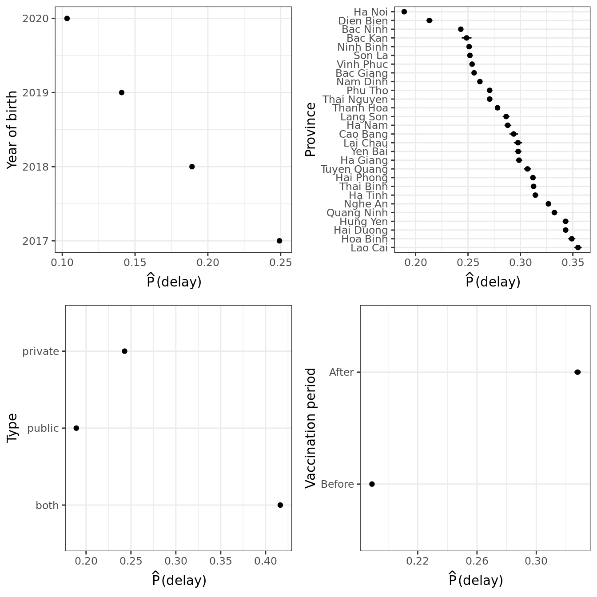
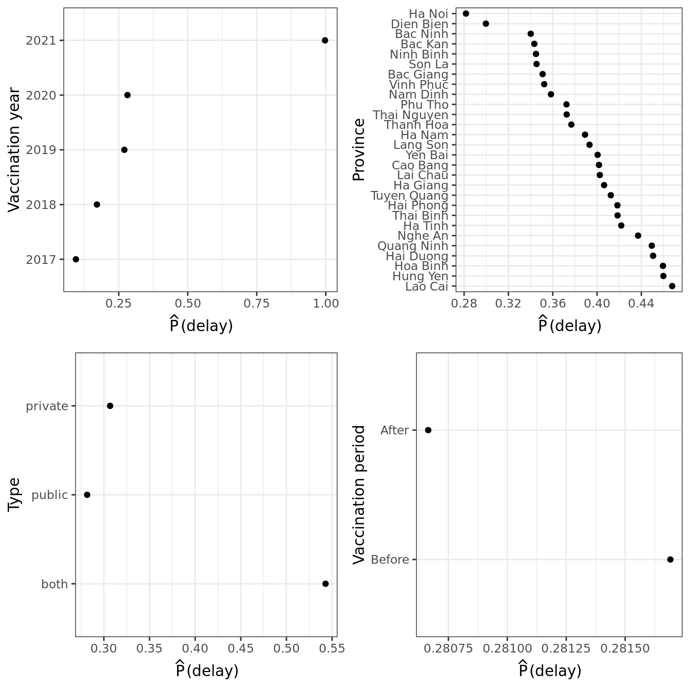

Vaccination and delays in vaccination due to COVID-19
Duc Du, Thinh Ong
2020-01-29 (update: 2022-03-31)
Last updated: 2022-03-31
Checks: 6 1
Knit directory: Vaccination_COVID/
This reproducible R Markdown analysis was created with workflowr (version 1.7.0). The Checks tab describes the reproducibility checks that were applied when the results were created. The Past versions tab lists the development history.
The R Markdown is untracked by Git. To know which version of the R Markdown file created these results, you’ll want to first commit it to the Git repo. If you’re still working on the analysis, you can ignore this warning. When you’re finished, you can run wflow_publish to commit the R Markdown file and build the HTML.
Great job! The global environment was empty. Objects defined in the global environment can affect the analysis in your R Markdown file in unknown ways. For reproduciblity it’s best to always run the code in an empty environment.
The command set.seed(20210126) was run prior to running the code in the R Markdown file. Setting a seed ensures that any results that rely on randomness, e.g. subsampling or permutations, are reproducible.
Great job! Recording the operating system, R version, and package versions is critical for reproducibility.
Nice! There were no cached chunks for this analysis, so you can be confident that you successfully produced the results during this run.
Great job! Using relative paths to the files within your workflowr project makes it easier to run your code on other machines.
Great! You are using Git for version control. Tracking code development and connecting the code version to the results is critical for reproducibility.
The results in this page were generated with repository version 3de5b2c. See the Past versions tab to see a history of the changes made to the R Markdown and HTML files.
Note that you need to be careful to ensure that all relevant files for the analysis have been committed to Git prior to generating the results (you can use wflow_publish or wflow_git_commit). workflowr only checks the R Markdown file, but you know if there are other scripts or data files that it depends on. Below is the status of the Git repository when the results were generated:
Ignored files:
Ignored: .Rhistory
Ignored: .Rproj.user/
Untracked files:
Untracked: analysis/05_merge_child_measle_report_updated4.Rmd
Unstaged changes:
Deleted: analysis/VennDiagram.2022-03-09_17-15-46.log
Deleted: analysis/VennDiagram.2022-03-09_17-16-18.log
Deleted: analysis/VennDiagram.2022-03-09_17-16-24.log
Deleted: analysis/VennDiagram.2022-03-09_17-16-33.log
Note that any generated files, e.g. HTML, png, CSS, etc., are not included in this status report because it is ok for generated content to have uncommitted changes.
There are no past versions. Publish this analysis with wflow_publish() to start tracking its development.
knitr::opts_chunk$set(echo = FALSE, warning = FALSE, message = FALSE, cache.lazy = FALSE,
tidy.opts=list(width.cutoff=60),
tidy=TRUE,
root.dir = rprojroot::find_rstudio_root_file())
library(workflowr)This is workflowr version 1.7.0
Run ?workflowr for help getting startedlibrary(data.table)
library(tidyverse)── Attaching packages ─────────────────────────────────────── tidyverse 1.3.1 ──✓ ggplot2 3.3.5 ✓ purrr 0.3.4
✓ tibble 3.1.6 ✓ dplyr 1.0.8
✓ tidyr 1.2.0 ✓ stringr 1.4.0
✓ readr 2.1.2 ✓ forcats 0.5.1── Conflicts ────────────────────────────────────────── tidyverse_conflicts() ──
x dplyr::between() masks data.table::between()
x dplyr::filter() masks stats::filter()
x dplyr::first() masks data.table::first()
x dplyr::lag() masks stats::lag()
x dplyr::last() masks data.table::last()
x purrr::transpose() masks data.table::transpose()library(dplyr)
library(lubridate)
Attaching package: 'lubridate'The following objects are masked from 'package:data.table':
hour, isoweek, mday, minute, month, quarter, second, wday, week,
yday, yearThe following objects are masked from 'package:base':
date, intersect, setdiff, unionlibrary(ggplot2)
library(gt)
library(gtsummary)
library(ggridges)
library(cowplot)
Attaching package: 'cowplot'The following object is masked from 'package:lubridate':
stamplibrary(rms)Loading required package: HmiscLoading required package: latticeLoading required package: survivalLoading required package: Formula
Attaching package: 'Hmisc'The following object is masked from 'package:gt':
htmlThe following objects are masked from 'package:dplyr':
src, summarizeThe following objects are masked from 'package:base':
format.pval, unitsLoading required package: SparseM
Attaching package: 'SparseM'The following object is masked from 'package:base':
backsolveselect <- dplyr::select
allp <- file.path("~", "updated_dataset")Use year of birth
Wald Statistics Response: vdelay_outcome
Factor Chi-Square d.f. P
vacdate_f 54135.87 1 <.0001
province 54951.88 27 <.0001
age 44368.83 1 <.0001
type 129416.19 2 <.0001
TOTAL 211171.63 31 <.0001
Use year of vaccination
Wald Statistics Response: vdelay_outcome
Factor Chi-Square d.f. P
vacdate_f 1.58 1 0.2093
province 49689.73 27 <.0001
vyear 70230.76 4 <.0001
type 129772.69 2 <.0001
TOTAL 233619.19 34 <.0001
Use expected year of vaccination
Wald Statistics Response: vdelay_outcome
Factor Chi-Square d.f. P
vacdate_f 70877.89 1 <.0001
province 52490.74 27 <.0001
expect_vyear 68121.76 5 <.0001
type 109847.01 2 <.0001
TOTAL 223501.80 35 <.0001
Some issues
Date of birth = date of vaccination although this is measles
FALSE TRUE
4212095 560 Some children were vaccinated very soon after birth (0 - 6 months)
Measle Measle_Mumps_Rubella Measle_Rubella
0 204 390 310
1 90 97 90
2 113 120 81
3 128 125 81
4 188 145 110
5 381 160 138
6 2138 202 254
7 2472 216 229
8 30086 1256 236
9 1551202 56167 603
10 438837 15728 479
11 158356 7795 568
12 44281 86714 3646
13 21786 52092 8620
14 12610 37110 18746
15 7329 42690 22119
16 4550 31012 23902
17 3279 25094 42179
18 2937 38832 770517
19 1968 23644 269185
20 1397 14682 109413
21 1124 10171 53970
22 724 7563 32738
23 523 6217 20857
24 383 5667 8535
25 291 4997 6190
26 216 4295 5135
27 169 3716 4237
28 144 3126 3847
29 129 2716 3261
30 72 2389 2323
31 69 2299 1893
32 76 1970 1712
33 73 1812 1490
34 43 1611 1391
35 36 1353 854
36 20 1250 583
37 21 1098 473
38 22 941 432
39 20 860 413
40 8 686 388
41 4 604 317
42 6 479 306
43 7 290 266
44 3 183 108
45 3 146 47
46 1 86 26
47 0 28 14
R version 4.0.5 (2021-03-31)
Platform: x86_64-pc-linux-gnu (64-bit)
Running under: Ubuntu 18.04.5 LTS
Matrix products: default
BLAS: /usr/lib/x86_64-linux-gnu/blas/libblas.so.3.7.1
LAPACK: /usr/lib/x86_64-linux-gnu/lapack/liblapack.so.3.7.1
locale:
[1] LC_CTYPE=C.UTF-8 LC_NUMERIC=C LC_TIME=C.UTF-8
[4] LC_COLLATE=C.UTF-8 LC_MONETARY=C.UTF-8 LC_MESSAGES=C.UTF-8
[7] LC_PAPER=C.UTF-8 LC_NAME=C LC_ADDRESS=C
[10] LC_TELEPHONE=C LC_MEASUREMENT=C.UTF-8 LC_IDENTIFICATION=C
attached base packages:
[1] stats graphics grDevices utils datasets methods base
other attached packages:
[1] rms_6.2-0 SparseM_1.81 Hmisc_4.6-0 Formula_1.2-4
[5] survival_3.2-10 lattice_0.20-41 cowplot_1.1.1 ggridges_0.5.3
[9] gtsummary_1.5.2 gt_0.4.0 lubridate_1.8.0 forcats_0.5.1
[13] stringr_1.4.0 dplyr_1.0.8 purrr_0.3.4 readr_2.1.2
[17] tidyr_1.2.0 tibble_3.1.6 ggplot2_3.3.5 tidyverse_1.3.1
[21] data.table_1.14.2 workflowr_1.7.0
loaded via a namespace (and not attached):
[1] TH.data_1.1-0 colorspace_2.0-3 ellipsis_0.3.2
[4] rprojroot_2.0.2 htmlTable_2.4.0 base64enc_0.1-3
[7] fs_1.5.2 rstudioapi_0.13 farver_2.1.0
[10] MatrixModels_0.5-0 fansi_1.0.2 mvtnorm_1.1-3
[13] xml2_1.3.3 codetools_0.2-18 splines_4.0.5
[16] knitr_1.37 jsonlite_1.8.0 broom_0.7.12
[19] cluster_2.1.1 dbplyr_2.1.1 png_0.1-7
[22] compiler_4.0.5 httr_1.4.2 backports_1.4.1
[25] assertthat_0.2.1 Matrix_1.3-2 fastmap_1.1.0
[28] cli_3.2.0 later_1.3.0 htmltools_0.5.2
[31] quantreg_5.88 tools_4.0.5 gtable_0.3.0
[34] glue_1.6.2 Rcpp_1.0.8 cellranger_1.1.0
[37] jquerylib_0.1.4 vctrs_0.3.8 nlme_3.1-152
[40] broom.helpers_1.6.0 xfun_0.29 ps_1.6.0
[43] rvest_1.0.2 lifecycle_1.0.1 polspline_1.1.19
[46] getPass_0.2-2 MASS_7.3-53.1 zoo_1.8-9
[49] scales_1.1.1 hms_1.1.1 promises_1.2.0.1
[52] sandwich_3.0-1 RColorBrewer_1.1-2 yaml_2.3.5
[55] gridExtra_2.3 rpart_4.1-15 latticeExtra_0.6-29
[58] stringi_1.7.6 highr_0.9 checkmate_2.0.0
[61] rlang_1.0.1 pkgconfig_2.0.3 evaluate_0.15
[64] htmlwidgets_1.5.4 labeling_0.4.2 processx_3.5.2
[67] tidyselect_1.1.2 plyr_1.8.6 magrittr_2.0.2
[70] R6_2.5.1 generics_0.1.2 multcomp_1.4-18
[73] DBI_1.1.2 pillar_1.7.0 haven_2.4.3
[76] whisker_0.4 foreign_0.8-81 withr_2.4.3
[79] nnet_7.3-15 modelr_0.1.8 crayon_1.5.0
[82] utf8_1.2.2 tzdb_0.2.0 rmarkdown_2.11
[85] jpeg_0.1-9 grid_4.0.5 readxl_1.3.1
[88] callr_3.7.0 git2r_0.29.0 reprex_2.0.1
[91] digest_0.6.29 httpuv_1.6.5 munsell_0.5.0